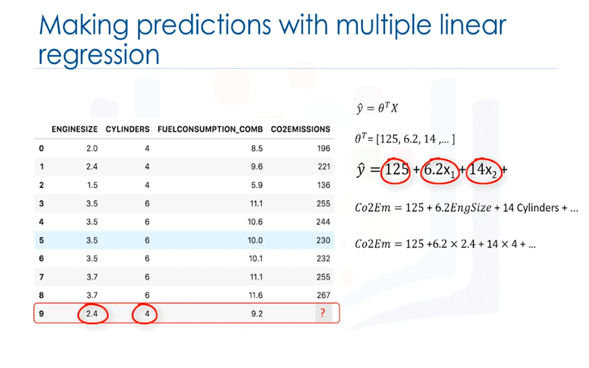
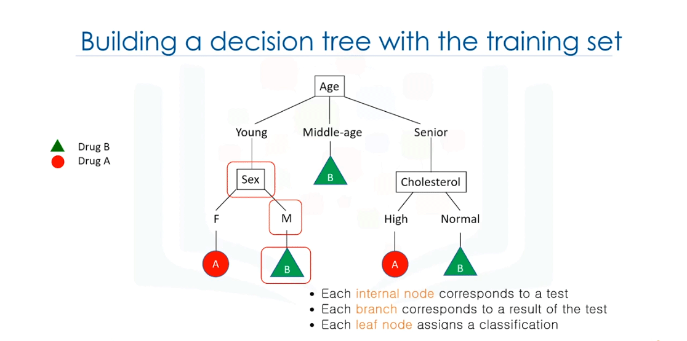
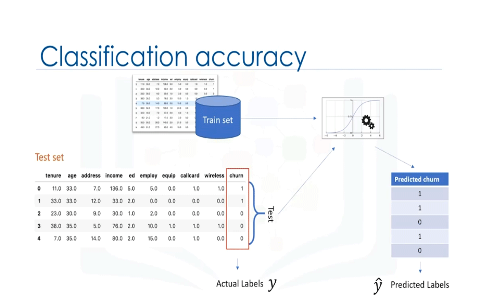
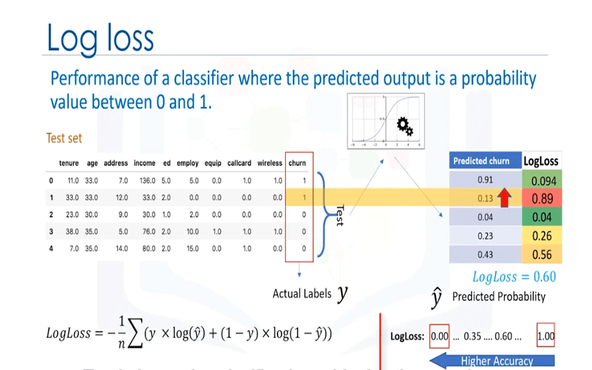

Definición de Aprendizaje Automático
(Machine learning)
El aprendizaje automático es el subcampo de las ciencias de la computación que da
a «las computadoras la capacidad de aprender sin ser programadas explícitamente». El aprendizaje automático sigue el mismo proceso que un niño de 4 años utiliza para aprender , entender y diferenciar los datos.
Por lo tanto, los algoritmos de aprendizaje automático, inspirados en el proceso de aprendizaje humano,
aprenden iterativamente de los datos y permiten a las computadoras encontrar información oculta.
Estos modelos nos ayudan en una variedad de tareas, como el reconocimiento de objetos, el resumen, la recomendación, etc.
Lo mejor es explicar con un ejemplo. Se tiene una muestra de células humanas extraída de un paciente,
y esta célula tiene características. Por ejemplo, su espesor de grupo es 6, su uniformidad
del tamaño de la célula es 1, su adhesión marginal es 1, y así sucesivamente.
Una de las preguntas interesantes que podemos hacer, en este punto es:
¿Es esta una
célula benigna o maligna?
A diferencia de un tumor benigno, un tumor maligno es un tumor que puede invadir el
tejido circundante o diseminarse alrededor del cuerpo, y diagnosticarlo temprano podría ser la clave para la
supervivencia del paciente.
Uno podría presumir fácilmente que sólo un médico con años de experiencia podría diagnosticar ese
tumor y decir si el paciente está desarrollando cáncer o no.
¿Cierto?
Bueno, imagina que has obtenido un conjunto de datos que contiene las características de miles de
muestras de células humanas extraídas de pacientes que se creía que estaban en riesgo de desarrollar
cáncer. El análisis de los datos originales mostró que muchas de las características diferían significativamente entre muestras benignas y malignas.
Puede utilizar los valores de estas características celulares en muestras de otros pacientes para dar una
indicación temprana de si una nueva muestra puede ser benigna o maligna.
Debe limpiar sus datos, seleccionar un algoritmo adecuado para construir un modelo de predicción
y entrenar su modelo para comprender los patrones de células benignas o malignas dentro de los datos.
Una vez que el modelo ha sido entrenado revisando los datos de forma iterativa, se puede utilizar para predecir su célula nueva o desconocida con una precisión bastante alta.
¡Esto es aprendizaje automático!
Es la forma en que un modelo de aprendizaje automático puede hacer la tarea de un médico o al menos ayudar a
ese médico a hacer el proceso más rápido. El aprendizaje automático afecta a la sociedad de una manera muy influyente.
Aquí hay algunos ejemplos de la vida real.
En primer lugar, ¿cómo crees que Netflix y Amazon recomiendan vídeos, películas y programas de televisión a sus usuarios?
¡Utilizan Machine Learning para producir sugerencias que usted podría disfrutar!
Esto es similar a cómo tus amigos podrían recomendarte un programa de televisión, en función de su conocimiento de los tipos de programas que te gusta ver.
¿Cómo cree que los bancos toman una decisión al aprobar una solicitud de préstamo?
Utilizan el aprendizaje automático para predecir la probabilidad de impago para cada solicitante, y luego aprueban o rechazan la solicitud de préstamo basándose en esa probabilidad.
Las empresas de telecomunicaciones utilizan los datos demográficos de sus clientes para segmentarlos, o predecir si se darán de baja de su compañía el próximo mes.
Hay muchas otras aplicaciones de aprendizaje automático que vemos todos los días en nuestra vida diaria, como chatbots, iniciar sesión en nuestros teléfonos o incluso juegos de computadora usando reconocimiento facial.
El aprendizaje automático tiene dos enfoques, el aprendizaje supervisado y el aprendizaje no supervisado.
Cada uno de estos utiliza diferentes técnicas y algoritmos de aprendizaje automático.
Entonces, examinemos rápidamente algunas de las técnicas más populares:
- La técnica de regresión/estimación se utiliza para predecir un valor continuo. Por ejemplo,
predecir cosas como el precio de una casa en función de sus características, o estimar
la emisión de CO2 del motor de un automóvil.
- Técnica de clasificación para predecir la clase o categoría de un caso, por ejemplo,
si una célula es benigna o maligna, o si un cliente se retirará o no.
- La agrupación de grupos de casos similares, por ejemplo, puede encontrar pacientes similares, o puede ser utilizada para la segmentación de clientes en el campo bancario.
- La técnica de asociación se utiliza para encontrar artículos o eventos que a menudo coocurren, por ejemplo, artículos de comestibles que generalmente son comprados juntos por un cliente en particular.
- La detección de anomalías se utiliza para descubrir casos anormales e inusuales, por ejemplo, se utiliza para la detección de fraude en tarjetas de crédito.
- La minería de secuencias se utiliza para predecir el próximo evento, por ejemplo, el flujo de clics
en los sitios web.
- La reducción de dimensiones se utiliza para reducir el tamaño de los datos.
Y finalmente,
los sistemas de recomendación, esto asocia las preferencias de las personas con otros que tienen gustos similares, y les recomienda nuevos artículos, como libros o películas.
Librerías de Python para
Aprendizaje automático
(Machine Learning)
Ejemplo de cómo se ve SciKit Learn cuando usas esta biblioteca. Se puede construir un modelo con solo unas pocas líneas de código.
Básicamente, los algoritmos de aprendizaje automático se benefician de la estandarización del conjunto de datos.
Si hay algunos valores atípicos o campos de escalas diferentes en el dataset, debe corregirlos.
El paquete de preprocesamiento de SciKit Learn proporciona varias funciones de utilidad comunes y clases de transformadores para cambiar los vectores de entidades sin procesar en una forma adecuada de vector para el modelado.
Debe dividir su conjunto de datos en conjuntos de entrenamiento y pruebas para entrenar su modelo y luego probar la precisión del modelo por separado.
SciKit Learn puede dividir matrices en entrenamientos aleatorios y probar subconjuntos para usted en una línea de código.
A continuación, puede configurar su algoritmo.
Por ejemplo, puede crear un clasificador utilizando un algoritmo de clasificación de vectores de soporte.
Llamamos a nuestra instancia estimadora CLF e inicializamos sus parámetros.
Ahora puede entrenar su modelo con el conjunto de trenes pasando nuestro conjunto de entrenamiento al método de ajuste,
el modelo CLF aprende a clasificar casos desconocidos.
Entonces podemos usar nuestro conjunto de pruebas para ejecutar predicciones, y el resultado nos dice cuál es la clase de cada valor desconocido.
Además, puede utilizar las diferentes métricas para evaluar la precisión del modelo.
Por ejemplo, utilizar una matriz de confusión para mostrar los resultados. Y por último, guarda su modelo.
Diferencias entre Machine Learning,
Deep Learning,
Inteligencia Artificial
Algoritmos de Regresión:
Regresión lineal simple, Regresión lineal múltiple
Regresión lineal simple
la regresión es el proceso de
predecir un valor continuo. En la
regresión hay dos tipos de
variables: una variable dependiente y una
o más variables independientes. La
variable dependiente puede ser vista como el objetivo del
estado o el objetivo final que estudiamos y
tratamos de predecir y las
variables independientes también conocidas como
variables explicativas pueden ser vistas como causas de
esos estados. Las variables independientes
se muestran convencionalmente por X y la
variable dependiente es notada por Y . Pongamos un ejemplo según la lámina mostrada:
para un coche de muestra con el tamaño del motor 2.4 se
puede encontrar segun la linea que sigue, que la emisión es 214, la línea de ajuste predice el
valor objetivo Y en nuestro caso utilizando el
tamaño del motor variable independiente
representado por X1 la línea de ajuste se muestra
tradicionalmente como un polinomio en un
simple problema de regresión, una sola X1. La forma del modelo sería Theta0 más
Theta1 por X1 en esta ecuación Yhat es la variable dependiente o el valor predicho y X1 es la
variable independiente. Theta0 y Theta1 son los parámetros de la línea que debemos
ajustar theta1 se conoce como la pendiente o gradiente de la línea de ajuste y Theta0
se conoce como la intercepción. Theta0 y Ttheta1 también se llaman los coeficientes de la ecuación lineal y se puede interpretar esta ecuación como yhat.
La mayoría de las bibliotecas utilizadas para el aprendizaje automático en Python R y Scala pueden encontrar fácilmente estos parámetros para usted, pero siempre es bueno entender cómo funciona.
Como ejemplo tenemos este problema:"Este conjunto de datos está relacionado con la
emisión de CO2 de diferentes coches que incluye
cilindros de tamaño del motor el consumo de combustible
y las emisiones de CO2 para varios modelos de coches
la pregunta que se da en este conjunto de datos es si
podemos predecir la emisión de CO2 de un coche
utilizando otro campo como el tamaño del motor"

Revisar todos los puntos y comprobar qué tan bien se alinean con esta línea de ajuste en negro, significa que
si tenemos, por ejemplo, un coche con tamaño de motor x1 igual 5.4 y emisión de CO2 es igual a 250 su CO2 debe
predecirse muy cerca del valor real, que es y , igual a 250. Basado en los datos históricos, pero si usamos la
línea de ajuste o mejor decir usando nuestro polinomio con parámetros conocidos para predecir la emisión CO2, devolverá y equivale a 340.
Ahora si compara el valor real de la emisión del coche con lo que hemos predicho usando nuestro modelo, descubrirá que tenemos un error de 90 unidades, esto significa que nuestra línea de predicción no es exacta. Este error también se llama error residual, así que podemos decir el error es la distancia desde el punto de datos a la línea de regresión ajustada.
La media de todos los errores residuales muestra qué tan mal la línea encaja con todo el conjunto de datos, matemáticamente puede ser mostrada por la ecuación de Error Cuadrado Medio, mostrado como MSE.
El objetivo de la regresión lineal es minimizar esta ecuación de MSE y para minimizarla debemos encontrar los mejores parámetros Theta0 y Theta1.
¿Cómo podemos encontrar una línea tan perfecta o establecer de otra manera cómo deberíamos encontrar los mejores parámetros para nuestra línea?
Hay dos enfoques, uno matemático y otro de optimización.
Veamos el matemático, para entender bien que hace el algoritmo:
Encontrar el Theta0 y theta1 en la regresión lineal simple es encontrar los coeficientes de la línea de ajuste que podemos utilizar, en una ecuación simple con sólo dos parámetros y sabiendo que Theta0 y theta1 son la intercepción y pendiente de la línea, podemos estimarlos directamente a partir de nuestros datos. Para ello se requiere que calculemos la media de las columnas independientes y dependientes u objetivo a partir del conjunto de datos teniendo en cuenta que todos los datos deben estar disponibles y finalmente obtenemos el resultado.
Siguiendo la ilustración, para este problema yhat es igual a Theta0 más theta1 por X1 o si lo asignamos a nuestro conjunto de datos sería emisión de CO2 igual a Theta0
más theta1 tamaño del motor. Podemos encontrar Theta0, theta1 usando las ecuación mencionada anteriormente.
Una vez que encontramos los valores podemos conectar la ecuación del modelo lineal por ejemplo, usemos Theta0 es igual a 125 y Theta1 es igual a 39 para que
podamos reescribir el modelo lineal como emisión CO2
es igual a 125 más 39 tamaño del motor
ahora vamos a conectar en la novena fila de nuestro
conjunto de datos y calcular la emisión de CO2
para un coche con un tamaño de motor de 2.4, por lo que la
emisión de CO2 es igual a 125 más 39 veces
2.4 por lo que podemos predecir que la
emisión de CO2 para este coche específico
será 218.6

Regresión lineal múltiple
Hay dos aplicaciones para regresión lineal múltiple.
En primer lugar, se puede utilizar cuando nos gustaría identificar la fuerza
del efecto que las variables independientes tienen sobre la variable dependiente.
Por ejemplo, ¿el tiempo de revisión, la ansiedad de las pruebas,
la asistencia a las conferencias y el género tienen algún efecto en el desempeño de los exámenes de los estudiantes?
En segundo lugar, se puede utilizar para predecir el impacto de los cambios, es decir,
para entender cómo cambia la variable dependiente
cuando cambiamos las variables independientes.
Si estuviéramos revisando los datos de salud de una persona,
una regresión lineal múltiple puede indicarle cuánto
sube o baja la presión arterial de esa persona por
cada unidad de aumento o disminución en el
índice de masa corporal de un paciente manteniendo otros factores constantes.
La regresión lineal múltiple es un método para predecir una variable continua, al igual que en la regresión linela simple, solo que utiliza múltiples variables llamadas variables independientes o predictores
que mejor predicen el valor de la variable objetivo que también se llama variable dependiente.
En regresión lineal múltiple, el valor objetivo Y
es una combinación lineal de variables independientes X.
Por ejemplo, en la ilustración siguiente, puede predecir cuánta emisión de CO2 puede
admitir un automóvil debido a variables independientes como el tamaño del motor del automóvil, el
número de cilindros y el consumo de combustible. La
regresión lineal múltiple es muy útil porque puede examinar
qué variables son predictores significativos de la variable de resultado. Además, puede averiguar cómo afecta cada entidad a la variable de resultado.
En el ejemplo de la ilustración si logra construir un modelo de regresión de este tipo,
puede usarlo para predecir la cantidad de emisión de
un caso desconocido, como el registro número nueve.
Generalmente, el modelo es de la forma yhat es igual a Theta0,
más Theta1 por X1, más Theta2 por X2 y así sucesivamente,
hasta ThetaN por N.
Matemáticamente, podemos mostrarlo como una forma vectorial también.
Esto significa que se puede mostrar como un producto de puntos de dos vectores;
el vector de parámetros y el vector de conjunto de entidades.
Generalmente, podemos mostrar la ecuación de un espacio multidimensional como Theta transposer por X,
donde Theta es un vector N por uno de los parámetros desconocidos en un espacio multidimensional,
y X es el vector de los conjuntos destacados,
ya que Theta es un vector de coeficientes y se
supone que debe ser multiplicado por X.
Convencionalmente, se muestra como Theta transposer. Theta también se llama los parámetros o vector de peso de la ecuación de regresión.
El primer elemento del conjunto de entidades se establecería en uno, porque convierte ese Theta0 en el
parámetro intercept o sesgado cuando el vector se multiplica por el vector parámetro.
Theta transposer por X, en un espacio unidimensional es la ecuación de una línea, es lo que usamos en regresión lineal simple. En dimensiones más altas cuando tenemos más de una entrada o X, la línea se llama plano o hiperplano, y esto es lo que usamos para regresión lineal múltiple. la idea es encontrar el hiperplano que mejor se ajuste a nuestros datos.
Supongamos por un momento que ya hemos encontrado el vector de parámetros de nuestro modelo,
significa que ya conocemos los valores del vector Theta.
Ahora podemos usar el modelo y el conjunto de características de la primera fila de
nuestro conjunto de datos para predecir la emisión CO2 para el primer coche, ¿correcto?
Si conectamos los valores del conjunto de funciones en la ecuación del modelo,
encontramos yhat.
Digamos, por ejemplo,
que devuelve 140 como el valor previsto para esta fila específica,
¿cuál es el valor real?
Y es igual a 196.
¿ Qué tan diferente es el valor previsto del valor real de 196?
Bueno, podemos calcularlo simplemente como 196 restar 140,
que por supuesto equivale a 56.
Este es el error de nuestro modelo solo para una fila o un coche en nuestro caso.
La media de todos los errores residuales muestra lo mal que el modelo representa el conjunto de datos,
se denomina error cuadrado medio o MSE.
Matemáticamente, el MSE puede ser mostrado por una ecuación.
Aunque esta no es la única manera de exponer el error de un modelo de regresión lineal múltiple,
es una de las formas más populares de hacerlo.
El mejor modelo para nuestro conjunto de datos es el que tiene un error mínimo para todos los valores de predicción.
Por lo tanto, el objetivo de la regresión lineal múltiple es minimizar la ecuación de MSE.
¿cómo encontramos el parámetro o los coeficientes para la regresión lineal múltiple?
Hay muchas maneras de estimar el valor de estos coeficientes.
Sin embargo, los métodos más comunes son
los mínimos cuadrados ordinarios y el enfoque de optimización.
Los
mínimos cuadrados ordinarios tratan de estimar los valores de
los coeficientes minimizando el error cuadrado medio.
Este enfoque utiliza los datos como una matriz y utiliza
operaciones de álgebra lineal para estimar los valores óptimos para el theta.
El problema con esta técnica es la complejidad temporal del cálculo de
las operaciones de matriz, ya que puede tardar mucho tiempo en terminarse.
Cuando el número de filas del conjunto de datos es menor que 10.000,
puede pensar en esta técnica como una opción.
Sin embargo, para valores mayores,
debe probar otros enfoques más rápidos.
La segunda opción es utilizar un algoritmo de optimización para encontrar los mejores parámetros.
Es decir, puede utilizar un proceso de optimización de los valores de
los coeficientes minimizando iterativamente el error del modelo en sus datos de entrenamiento.
Por ejemplo, puede usar el descenso de gradiente que
comienza la optimización con valores aleatorios para cada coeficiente,
luego calcula los errores e intenta minimizarlo a
través del cambio y de los coeficientes en múltiples iteraciones.
El descenso de degradado es un enfoque adecuado si tiene un conjunto de datos grande.
Sin embargo, hay otros enfoques para estimar
los parámetros de la regresión lineal múltiple que puede explorar por su cuenta.
Después de encontrar los mejores parámetros para su modelo,
puede ir a la fase de predicción.
Después de encontrar los parámetros de la ecuación lineal,
hacer predicciones es tan simple como resolver la ecuación para un conjunto específico de entradas.

Según la ilustración, estamos prediciendo la emisión CO2 ó Y, con otras variables para el automóvil en el número récord nueve.
Nuestra representación del modelo de regresión lineal para
este problema sería yhat es igual a Theta transposer por X.
Una vez que encontramos los parámetros,
podemos conectarlos a la ecuación del modelo lineal.
Por ejemplo, usemos Theta0 es igual a 125,
Theta1 es igual a 6.2,
Theta2 es igual a 14, y así sucesivamente.
Si lo asignamos a nuestro conjunto de datos,
podemos reescribir el modelo lineal ya que las emisiones CO2 equivalen a
125 más 6,2 multiplicados por el tamaño del motor,
más 14 multiplicados por el cilindro, y así sucesivamente.
Como puede ver, la regresión lineal múltiple
estima la importancia relativa de los predictores.
Por ejemplo, muestra que el cilindro tiene un mayor impacto
en las cantidades de emisiones CO2 en comparación con el tamaño del motor.
Ahora, conectemos la novena fila de nuestro conjunto de datos y calculemos
la emisión CO2 para un automóvil con el tamaño del motor de 2.4.
Por lo tanto, la emisión CO_2 es igual a 125 más 6,2 veces 2,4,
más 14 veces cuatro, y así sucesivamente.
Podemos predecir que la emisión de CO2 para este coche específico sería 214,1.
Métricas de evaluación en
modelos de regresión
Las métricas de evaluación desempeñan un papel clave en el desarrollo de un modelo, ya que proporcionan información a las áreas que requieren mejoras.
Antes de entrar en la definición de estas,
necesitamos definir qué es realmente un error.
En el contexto de la regresión, el error del modelo es la diferencia entre
los puntos de datos y
la línea de tendencia generada por el algoritmo.
Dado que hay varios puntos de datos,
un error se puede determinar de varias maneras:
El error absoluto medio es la media
del valor absoluto de los errores.
Esta es la métrica más fácil de entender,
ya que es solo el error promedio.
El error cuadrático medio es la media del error cuadrático.
Es más popular que el error absoluto medio porque
el enfoque se orienta más hacia los grandes errores.
Esto se debe al término al cuadrado,
aumentando exponencialmente los errores más grandes
en comparación con los más pequeños.
El error cuadrático medio es
la raíz cuadrada del error cuadrático medio.
Este es uno de los más populares de
las métricas de evaluación porque
El error cuadrático medio es interpretable en
las mismas unidades que el vector de respuesta o unidades Y,
facilitando la relación de su información.
Error absoluto relativo
también conocida como suma residual de cuadrados, RAE
donde Y bar es un valor medio de Y,
toma el error absoluto total y lo normaliza.
Al dividir por el error absoluto total
del predictor simple.
El error cuadrático relativo es muy
similar al error absoluto relativo,RSE
pero es ampliamente adoptado por
la comunidad de ciencia de datos porque
se utiliza para calcular R-cuadrado. (R2=1-RSE)
R-squared no es un error por decir, pero es
una métrica popular para la precisión de su modelo.
Representa qué tan cerca están los valores de los datos
son a la línea de regresión ajustada.
Cuanto mayor sea el R-cuadrado,
mejor se ajusta el modelo a sus datos.
Cada una de estas métricas se puede utilizar
para cuantificar su predicción.
La elección de la métrica depende completamente del tipo
de modelar su tipo de datos y dominio de conocimiento.
Algoritmos de Clasificación:
K-Nearest Neighbors
Algoritmo K-Nearest Neighbors
El algoritmo K-Nearest Neighbors es un algoritmo de clasificación que
toma un montón de puntos etiquetados y los utiliza para aprender a etiquetar otros puntos.
Este algoritmo clasifica los casos en función de su similitud con otros casos.
En K-Nearest Neighbors, se dice que los puntos de datos que están cerca unos de otros son vecinos.
K-Vecinos más cercanos se basa en este paradigma.
Casos similares con las mismas etiquetas de clase están cerca uno del otro.
Por lo tanto, la distancia entre dos casos es una medida de su disimilitud.
Suponer que tenemos este problema de clasificacion:
Imagine que un proveedor de telecomunicaciones ha
segmentado su base de clientes por patrones de uso de servicios,
clasificando a los clientes en cuatro grupos.
Si se pueden utilizar datos demográficos para predecir la pertenencia a un grupo, la
empresa puede personalizar las ofertas para clientes con perspectiva individual.Nuestro objetivo es construir un clasificador.
Por ejemplo, usar la fila cero a siete para predecir la clase de la fila ocho.
¿ Podemos decir también que la clase de
nuestro nuevo cliente es probablemente el grupo cuatro, es decir, el servicio total,
porque su vecino más cercano es también de clase cuatro?
Sí, podemos. De hecho,
es el primer vecino más cercano.
Ahora, la pregunta es,
¿hasta qué punto podemos confiar en nuestro juicio que se basa en el primer vecino más cercano?
Podría ser un mal juicio, especialmente
si el primer vecino más cercano es un caso muy específico o un valor atípico, ¿correcto?
Ahora, veamos nuestra trama de dispersión.
En lugar de elegir al primer vecino más cercano,
¿qué tal si elegimos a los cinco vecinos más cercanos y
votamos por mayoría entre ellos para definir la clase de nuestro nuevo cliente?
En este caso, veríamos que
tres de cada cinco vecinos más cercanos nos dicen que vayamos a la clase tres,
que es el Servicio Plus.
En un problema de clasificación,
el algoritmo K-Nearest Neighbors funciona de la siguiente manera:
- Uno, elija un valor para K.
- Dos,
calcule la distancia desde el nuevo caso de espera de cada uno de los casos del conjunto de datos.
- Tres, buscar las observaciones K en
los datos de entrenamiento que están más cerca de las mediciones del punto de datos desconocido.
- Y cuatro, predecir la respuesta del punto de datos desconocido
usando el valor de respuesta más popular de los vecinos más cercanos K.
Hay dos partes en este algoritmo que podrían ser un poco confusas.
Primero, cómo seleccionar el K correcto y el segundo,
cómo calcular la similitud entre los casos.
1- ¿cómo podemos calcular la similitud entre dos puntos de datos?
Supongamos que tenemos dos clientes, el
cliente uno y el cliente dos,
y por un momento, supongamos que estos dos clientes tienen una sola característica,
la edad. Podemos utilizar fácilmente un tipo específico de
distancia Minkowski para calcular la distancia de estos dos clientes,
es de hecho la distancia euclidiana.
La distancia de X1 desde X2 es la raíz de 34 menos 30 a la potencia de dos, que es cuatro.
¿ Qué pasa si tenemos más de una característica?
Por ejemplo, la edad y los ingresos.
Si tenemos ingresos y edad para cada cliente,
todavía podemos usar la misma fórmula, pero esta vez,
lo estamos usando en un espacio bidimensional.
También podemos usar la misma matriz de distancia para vectores multidimensionales.
Por supuesto, tenemos que normalizar nuestro
conjunto de características para obtener la medida precisa de disimilitud.
¿Cómo elegimos la K correcta?
Supongamos que queremos encontrar la clase
del cliente anotado como signo de interrogación en el gráfico.
¿ Qué sucede si elegimos un valor muy bajo de K?
Digamos que K es igual a uno.
El primer punto más cercano sería el azul,
que es la clase uno.
Esta sería una mala predicción,
ya que más de los puntos a su alrededor son magenta o clase cuatro.
De hecho, dado que su vecino más cercano es azul podemos decir que capturamos
el ruido en los datos o elegimos uno de los puntos que era una anomalía en los datos.
Un valor bajo de K también causa un modelo altamente complejo,
lo que podría resultar en un sobreajuste del modelo.
Significa que el proceso de predicción no está
lo suficientemente generalizado como para ser utilizado en casos fuera de la muestra.
Los datos fuera de la muestra son datos que están fuera del conjunto de datos utilizado para entrenar el modelo.
si elegimos un valor muy alto de K como K es igual a 20,
entonces el modelo se generaliza excesivamente.
Entonces, ¿cómo podemos encontrar el mejor valor para K?
La solución general es reservar una parte de
sus datos para probar la precisión del modelo.
Una vez que lo haya hecho,
elija K es igual a uno y, a continuación, utilice la parte de entrenamiento para modelar
y calcular la precisión de la predicción utilizando todas las muestras de su conjunto de pruebas.
Repita este proceso aumentando la K y vea qué K es mejor para su modelo.
en nuestro caso,
K es igual a cuatro nos dará la mejor precisión. El
análisis de vecinos más cercanos también se puede utilizar para calcular valores de un destino continuo.
En esta situación, se
utiliza el valor objetivo medio o mediano de los vecinos más cercanos para obtener el valor previsto para el nuevo caso.
Los árboles de decisión se crean dividiendo el conjunto de entrenamiento en nodos distintos,
donde un nodo contiene toda o la mayoría de una categoría de los datos. Imagina que eres un investigador médico recopilando datos para un estudio.
Ya ha recopilado datos sobre un conjunto de
pacientes que sufrían de la misma enfermedad.
Durante su tratamiento,
cada paciente respondió a uno de los dos medicamentos.
Los llamamos drogas A y drogas B.
Parte de su trabajo es construir un modelo para averiguar qué medicamento
podría ser apropiado para un futuro paciente con la misma enfermedad.
Los conjuntos de características de este conjunto de datos son la edad, el género
, la presión arterial y el colesterol de nuestro grupo de
pacientes y el objetivo es el medicamento al que respondió cada paciente.
Veamos cómo se construye un árbol de decisiones para este conjunto de datos.
Para llegar a una decisión sobre qué medicamento prescribir a un nuevo paciente.
Si miramos el diagrama aquí,
podemos ver que es el clasificador de un paciente.
Entonces, como se mencionó, queremos recetar un medicamento a un nuevo paciente,
pero la decisión de elegir el medicamento A o B estará influenciada por la situación del paciente.
Comenzamos con la edad,
que puede ser joven, de mediana edad o mayor.
Si el paciente es de mediana edad,
entonces definitivamente vamos a tomar
el medicamento B. Por otro lado, si tiene un paciente joven o de edad avanzada,
necesitará más detalles para ayudarnos a determinar qué medicamento recetar.
Las variables de decisión adicionales pueden ser cosas como los niveles de colesterol,
sexo o presión arterial.
Por ejemplo, si el paciente es femenino,
entonces recomendaremos el medicamento A,
pero si el paciente es masculino,
entonces irá por el medicamento B.

Cada nodo interno corresponde a una prueba,
y cada rama corresponde a un resultado de la prueba,
y cada nodo hoja asigna un paciente a una clase.
Ahora la pregunta es,
¿cómo podemos construir un árbol de decisiones así?
Aquí está la forma en que se construye un árbol de decisión.
Un árbol de decisión se puede construir considerando los atributos uno por uno.
Primero, elija un atributo de nuestro conjunto de datos.
Calcule la importancia del atributo en la división de los datos.A continuación, divida los datos en función del valor del mejor atributo,
luego vaya a cada rama y repita para el resto de los atributos.
Después de construir este árbol,
puede usarlo para predecir la clase de casos desconocidos; o en nuestro caso,
el medicamento adecuado para un nuevo paciente basado en sus características.
los árboles de decisión se pueden usar para la clasificación, pero también podemos usarlos para la regresión, comúnmente llamados árboles de regresión.
La idea básica detrás de los árboles de regresión es dividir nuestros datos en grupos según las características, como en la clasificación, y devolver una predicción que es el promedio de los datos que ya hemos visto.
Consideremos los datos de vivienda que aparecen a continuación, en los que estamos utilizando la "Edad" para predecir el "Precio" de una casa.
Aquí, podemos ver la diferencia que tiene la edad en los precios de la vivienda. Las edades entre 0 y 10 años tienen un precio promedio de aproximadamente $500.000, las edades entre 10 y 50 años tienen un precio promedio de aproximadamente $380.000 y las casas mayores de 50 años tienen un precio promedio de aproximadamente $100.000. Usando estos rangos generales, podemos predecir el precio de una casa.
Usando los datos anteriores, podemos crear el árbol de regresión, como se muestra a continuación. Los precios se determinaron calculando el precio promedio de las casas en el rango de edad. Usamos las funciones para agrupar las casas y luego calculamos el precio promedio en estas agrupaciones.
Criterio
La forma en que se construyen los árboles es similar a la clasificación, pero en lugar de usar el criterio de entropía. En los árboles de clasificación, elegimos características que aumentan la ganancia de información. En los árboles de regresión, elegimos características que minimizan el error.
Uno popular es el error absoluto medio, que también hemos visto anteriormente.
MAE=n1i=1 ∑n∣yi−y^i∣
¿Cómo se construyen los árboles de regresión?
Tome la muestra del conjunto de datos que se muestra a continuación, el primer paso es decidir cuál es la primera decisión. Haremos esto usando el criterio y verificando cada característica en el conjunto de datos para ver cuál produce el error mínimo.
Características categóricas
Tome la muestra del conjunto de datos que se muestra a continuación, el primer paso es decidir cuál es la primera decisión. Haremos esto usando el criterio y verificando cada característica en el conjunto de datos para ver cuál produce el error mínimo.
Las funciones categóricas son simples, aquí tenemos Near Water, por lo que todo lo que tenemos que hacer es calcular el error si usamos esto como la primera función. La característica Near Water tiene dos categorías: 'Sí' y 'No', por lo tanto, debemos calcular el 'Precio' promedio de las casas en las categorías 'Sí' y 'No'. Luego usamos esos valores para calcular el error promedio.
Categoria No:
Índice de Casas en Categoría 'No' = [0, 1, 2, 3, 4]
Precios de Casas en Categoría 'No' = [260831.34, 222939.35, 101882.1, 226868.52, 94868.94]
Precio Promedio de Casas en Categoría 'No' = 181478.05
Error absoluto = [79353.29, 41461.30, 79595.95, 45390.47, 86609.11]
Categoria Si:
Índice de Viviendas en Categoría 'Sí' = [5,6,7,8,9]
Precios de Viviendas en Categoría 'Sí' = [197703.55, 347982.98, 343150.38, 206713.16, 329768.77]
Precio Promedio de Vivienda en Categoría 'Sí' = 285063.77
Error absoluto = [87360.22, 62919.22, 58086.61, 78350.61, 44705.00]
MAE
Este es el MAE de la característica Near Water, y este número se utilizará para comparar el MAE de todas las demás características para determinar cuál es el más bajo. Por lo tanto, establecerá la primera decisión en nuestro árbol de regresión.
MAE = 66383.17
Características numéricas
Las características numéricas, como 'Edad', son más difíciles de manejar porque necesitamos encontrar un número, en lugar de usar una categoría, para dividir los datos. Hacemos esto creando un límite entre cada punto, luego calculamos el error.
Por ejemplo, primero creamos el límite entre los dos primeros puntos de datos, que son (0, 260831,34) y (5, 347982,98), por lo que creamos un límite de x = 2,5 (el punto medio entre el componente x de los dos primeros datos puntos). Ahora encontramos el precio promedio de las casas en los lados izquierdo y derecho de este límite y lo usamos para calcular el MAE.
Izquierda::
Índice de Casas del Lado Izquierdo = [0]
Precios de Casas del Lado Izquierdo = [260831.34]
Precio Promedio de Casas del Lado Izquierdo = 260831.34
Error Absoluto = [0]
Derecha:
Índice de Casas en el Lado Derecho = [1, 2, 3, 4, 5, 6, 7, 8, 9]
Precios de Casas en la Categoría Derecha = [222939.35, 101882.1, 226868.52, 94868.94, 197703.55, 347982.98, 343150.38, 206713,16, 329768,77]
Precio medio de la vivienda en la categoría correcta = 230208,64
Error absoluto = [7269,29, 128326,54, 3340,12, 135339,7, 32505,09, 117774,34, 112941,74, 23495. 48, 99560.13]
MAE
Ahora podemos encontrar el MAE, usando los errores absolutos de los lados izquierdo y derecho.
ES = 66055.24
Pasos adicionales
Este proceso se repite luego para cada límite entre cada par de puntos consecutivos.
Esto da como resultado el siguiente MAE para cada límite:
Donde los valores para los puntos son:
(2.5, 66055.24)
(7.5, 60871.09)
(15, 50847.52)
(22.5, 57918.2)
(35, 49726.55)
(50, 51792.86)
(57.5, 51288.06)
(75, 62616.49)
(95, 66568.42)
Podemos ver que el límite 35 da como resultado el MAE más bajo en esta función.
¿Cómo elegir la decisión?
Ahora, comparamos el MAE categórico y el MAE numérico más bajo, en este caso, el categórico es 66055.24, y el numérico es 49726.55. Entonces, para la primera decisión, usaremos la función numérica 'Edad'. Terminamos con un árbol de regresión que se ve así:

¿Cuando paramos?
Con el árbol de regresión de arriba, tenemos dos opciones, podemos detenernos aquí y usar el valor promedio de 'Sí' (izquierda) y 'No' (derecha) para predecir los precios de la vivienda, o podemos continuar agregando más decisiones a cualquiera de las dos ramas. Hay algunas condiciones que se usan comúnmente para detener el crecimiento de árboles de regresión:
• Profundidad del árbol
• Número de muestras restantes en una rama
• Número de muestras en cada rama si se toma otra decisión
La profundidad del árbol de arriba es 1, porque hay una sola decisión y el número de muestras en cada lado es 5. Agreguemos más decisiones hasta que la profundidad del árbol sea 2.
Primero, comenzamos con el 'Sí' ( lado izquierdo) y calculamos el MAE para las características usando las casas que tienen 'Edad' < 35.
Adición de decisiones
Izquierdo:
Como antes, usamos la función Near Water y calculamos el MAE en casas con índice 0, 3, 6, 7 y 9.
Características categóricas
MAE = 11005.34
Características numéricas
Ahora, encontramos el MAE para los límites en la función 'Edad'.
Podemos ver que la función Near Water hace que el MAE sea más bajo en el lado 'Sí' (izquierda) del árbol de regresión, por lo que agregaremos una decisión para la función Near Water.
Derecho:
Ahora encontraremos las características que resultan en el MAE más bajo de las casas con índice 1, 8, 2, 4 y 5.
Características categóricas
Mae = 35018.94
Características numéricas
Aquí, también podemos ver que la función 'Edad' dará como resultado el MAE más bajo con el límite establecido en 57,5, por lo que en el lado 'No' (derecho) del árbol, agregaremos otra decisión para la función 'Edad'
Resultado final
Métricas de evaluación
en modelos de clasificación
Imagine que tenemos un conjunto de datos histórico que muestra el giro del cliente para una
empresa de telecomunicaciones.
Hemos entrenado el modelo, y ahora queremos calcular su precisión usando el conjunto de pruebas.
Pasamos el conjunto de pruebas a nuestro modelo, y encontramos las etiquetas predecidas.
Ahora la pregunta es, «¿Qué tan preciso es este modelo?»
Básicamente, comparamos los valores reales en el conjunto de pruebas con los valores predecidos por
el modelo, para calcular la precisión del modelo.

Digamos que y muestra las etiquetas verdaderas del conjunto de datos de los clientes que cambian(churn) de empresa de telecomunicaciones. Y y muestra los valores predecidos por nuestro clasificador.
Indice de Jaccard
Entonces podemos definir Jaccard como el tamaño de la intersección dividido por el tamaño de la
unión de dos conjuntos de etiquetas.
Por ejemplo, para un conjunto de pruebas de tamaño 10, con 8 predicciones correctas u 8 intersecciones,
la precisión por el índice Jaccard sería 0.66.
Si todo el conjunto de etiquetas previstas para una muestra coincide estrictamente con el conjunto verdadero
de etiquetas, entonces la precisión del subconjunto es 1.0; de lo contrario, es 0.0.
Puntuación F1
Otra forma de ver la precisión de los clasificadores en mirar una matriz de confusión, que es una tabla para describir el rendimiento de un modelo de clasificación. Muestra las predicciones correctas e incorrectas que hace un modelo, y cómo se distribuyen en todas las clases. Se divide en cuatro cuadrantes: Verdaderos Positivos (VP), Verdaderos Negativos (VN), Falsos Positivos (FP) y Falsos Negativos (FN). Cada cuadrante proporciona información valiosa sobre cómo se desempeña el modelo en cada clase.
Por ejemplo, supongamos que nuestro conjunto de pruebas tiene solo 40 filas.
Esta matriz muestra las predicciones corregidas e incorrectas, en comparación con las
etiquetas reales. En particular, sirve para mostrar de forma explícita cuándo una clase es confundida con otra, lo cual nos permite trabajar de forma separada con distintos tipos de error.
Cada fila de matriz de confusión muestra las etiquetas Actual/True del conjunto de prueba, y las columnas muestran
las etiquetas predecidas por clasificador.
Veamos la primera fila.
La primera fila es para clientes cuyo valor real de churn en el conjunto de prueba es 1.
Como puede calcular, de 40 clientes, el valor de churn de 15 de ellos es 1.
Y de estos 15, el clasificador predijo correctamente 6 de ellos como 1, y 9 de ellos como 0.
Esto significa que para 6 clientes, el valor de churn real era 1, en el conjunto de prueba, y el
clasificador también los predijo correctamente como 1.
Sin embargo, mientras que la etiqueta real de 9 clientes era 1, el clasificador predijo que eran 0,
lo cual no es muy bueno.
Podemos considerar esto como un error del modelo para la primera fila.
¿ Qué pasa con los clientes con un valor de churn 0?
Veamos la segunda fila.
Parece que había 25 clientes cuyo valor de churn era 0.
El clasificador predijo correctamente 24 de ellos como 0, y uno de ellos predijo erróneamente como 1.
Por lo tanto, ha hecho un buen trabajo al predecir los clientes con un valor de churn de 0.
Una buena cosa sobre la matriz de confusión es que muestra la capacidad del modelo para
predecir o separar correctamente las clases.
En el caso específico de un clasificador binario, como este ejemplo, podemos interpretar estos
números como el recuento de verdaderos positivos, falsos negativos, verdaderos negativos y falsos positivos.
Basándonos en el recuento de cada sección, podemos calcular la precisión y la recuperación de cada
etiqueta.
La precisión es una medida de la precisión, siempre que se haya predicho una etiqueta de clase.
Se define por: precisión = Verdadero Positivo/(Verdadero Positivo + Falso Positivo).
Y Recall es la verdadera tasa positiva.
Se define como: Recall = Verdadero Positivo/(Verdadero Positivo + Falso Negativo).
Por lo tanto, podemos calcular la precisión y la recuperación de cada clase.
Ahora estamos en condiciones de calcular las puntuaciones de F1 para cada etiqueta, en función de la precisión
y la recuperación de esa etiqueta.
La puntuación F1 es el promedio armónico de la precisión y la recuperación, donde una puntuación F1 alcanza
su mejor valor en 1 (que representa precisión perfecta y recuperación) y su peor en 0.
Es una buena manera de mostrar que un clasificador tiene un buen valor tanto para la recuperación como para la precisión.
Se define usando la ecuación F1-score.
Por ejemplo, la puntuación F1 para la clase 0 (es decir, churn=0), es 0.83, y la puntuación F1 para la clase 1
(es decir, churn=1), es 0.55.
Y finalmente, podemos decir que la precisión promedio para este clasificador es el promedio de la
puntuación F1 para ambas etiquetas, que es 0.72 en nuestro caso.
Tenga en cuenta que tanto Jaccard como F1-score
también se pueden utilizar para clasificadores multiclase
Log loss
El log loss, también conocido como pérdida logarítmica, es una métrica comúnmente utilizada en problemas de clasificación, especialmente en tareas de clasificación binaria y multiclase. Se utiliza para medir la precisión de un modelo de clasificación comparando las probabilidades predichas por el modelo con las etiquetas verdaderas de los datos de entrenamiento.
A veces, la salida de un clasificador es la probabilidad de una etiqueta de clase, en lugar de la
etiqueta. Por ejemplo, en regresión logística, la salida puede ser la probabilidad de pérdida del cliente,
es decir, sí (o igual a 1).
Esta probabilidad es un valor entre 0 y 1.
La pérdida logarítmica (también conocida como Log loss) mide el rendimiento de un clasificador donde
la salida prevista es un valor de probabilidad entre 0 y 1.
Entonces, por ejemplo, predecir una probabilidad de 0,13 cuando la etiqueta real es 1,
sería malo y daría como resultado una alta pérdida de registro.
Podemos calcular la pérdida de log para cada fila usando la ecuación de log loss, que mide
cuán lejos está cada predicción, de la etiqueta real.
A continuación, calculamos la pérdida promedio de registro en todas las filas del conjunto de pruebas.
Es obvio que los clasificadores ideales tienen valores progresivamente más pequeños de pérdida de registro.
Por lo tanto, el clasificador con menor pérdida de registro tiene una mayor precisión.

El log loss se calcula para cada observación en el conjunto de datos y luego se toma el promedio de todos los log loss para obtener una única métrica que resume la precisión del modelo en su conjunto. Un modelo con un log loss de 0 es perfecto.